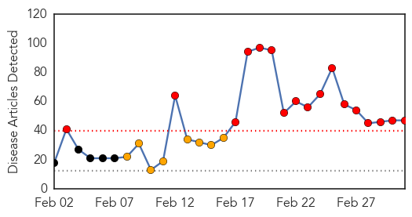
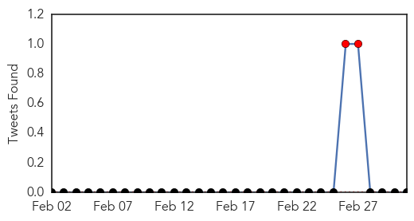

Measles
30-Day Web Trend
5 alerts, 5 warnings

30-Day Twitter Trend
4 alerts, 0 warnings

Article Locations

Article Confidences

Top Articles:
- 0.981
- Anti-vax measles claim misinterprets data
- 0.958
- WHO calls for more measles vaccination in Europe as large outbreaks persist
- 0.945
- Public Health addresses measles and the importance of vaccinations
- 0.933
- 131 confirmed measles cases in California
- 0.926
- Vaccination saves lives
- 0.890
- WHO calls for more measles vaccination in Europe as large outbreaks persist
- 0.841
- Aliso Niguel High School
- 0.836
- Parents increasingly ask doctors to delay vaccines
- 0.821
- Oregon board endorses eliminating non-medical vaccine exemptions
- 0.813
- Study: Parents increasingly ask doctors to delay vaccines
- 0.759
- Could US measles outbreak reach NZ?
- 0.751
- Letter: Hype of measles worse than illness
- 0.750
- Could Syria really be polio free?
- 0.692
- Health officials perplexed by vaccination skeptics
- 0.592
- Health officials perplexed by vaccination skeptics
- 0.577
- The needless fallout – Vaccination
- 0.550
- Doctors Often Yield to Parents' Requests to Delay Kids' Vaccines
- 0.538
- Health officials perplexed by vaccination skeptics
- 0.519
- Health officials monitoring possible measles case
- 0.508
- Islamic Nation Fights Against Anti-Vaxxers: Starts Arresting Parents Who Object to Vaccinations
Top Tweets:
-
No tweets found for Mar 03, 2015
Swine Flu
30-Day Web Trend
17 alerts, 8 warnings

30-Day Twitter Trend
3 alerts, 0 warnings

Article Locations
Article Confidences
Top Articles:
- 1.000
- Nepal prepares to tackle swine flu outbreak
- 1.000
- Health dept. allays swine flu fear
- 1.000
- Swine Flu death toll reaches 1,115, breaches 20,000 mark
- 1.000
- Nepal prepares to tackle swine flu outbreak
- 1.000
- Latest News & Gossip on Popular Trends at India.com
- 0.999
- One more dies of swine flu in Odisha, toll rises to 5
- 0.999
- Toothless in swine flu fight
- 0.999
- Flu virus tests India’s official response
- 0.999
- 16 people have already died during flu epidemic
- 0.997
- Swine flu death toll touches 1,158, Ahmedabad lawyers stay away from work
- 0.997
- 58 succumb in Telangana; 1,558 positive cases
- 0.997
- Swine flu kills eight more in Gujarat
- 0.997
- Swiss strain of flu virus not so scary, Thai doctors say
- 0.997
- H1N1: ‘Requests for vaccine pour in daily’
- 0.995
- Start and stop signals for in-house flu tests
- 0.995
- 'Put critical flu patients on ventilator,' health department directs hospitals
- 0.994
- Swine flu in Gujarat: 8 more lives lost, death toll reaches 283
- 0.994
- Two more succumb to swine flu in Pune
- 0.993
- Swine Flu Death toll increases to 58 in Telangana
- 0.992
- Make Swine Flu Vaccine a Part of Health System
- 0.992
- Govt grilled over swine flu deaths
- 0.991
- Gujarat is number one in Swine Flu deaths
- 0.989
- Tamiflu to be Available in Pvt Hospitals
- 0.989
- First swine flu case confirmed in Jharkhand
- 0.989
- Swine flu toll rises to two in Akola
- 0.988
- Camp to screen swine flu
- 0.979
- Holi advisory: Don’t hug the crowd, just greet with namaste
- 0.977
- Campaign to create awareness of swine flu
- 0.976
- Rain pushes Maharashtra swine flu toll to 152
- 0.976
- Swine flu toll now five in Odisha
- 0.972
- Swine flu continues deadly run in Maharashtra
- 0.951
- Anti-pig drive in Sagar to contain spread of H1N1
- 0.942
- Experts give thumbs up to government's swine flu strategy
- 0.942
- Students, staff with cough or cold to go on leave in Goa
- 0.926
- Swine flu Death toll Reaches 283 and 4,766 Cases
- 0.924
- Three deaths of H1N1 reported in Tumakuru
- 0.924
- Kashmir to have two swine flu test labs, toll now 10
- 0.902
- Experts give thumbs up to government's swine flu strategy
- 0.894
- Swine flu fear makes lawyers go on vacation in Ahmedabad
- 0.882
- PSC qualifiers want main exam to be postponed
- 0.857
- Mizoram officials screening people for HINI virus
- 0.788
- Sonam Kapoor flown to Mumbai
- 0.714
- H1N1 Death: City Hospitals Inspect Power Backup
- 0.706
- Conference addresses media coverage of health issues
- 0.665
- Woman dies of H1N1 in Bidar
- 0.607
- DRMs, med officials to take preventive measures against swine flu
- 0.529
- After Sonam Kapoor, co-star Salman Khan undergoes swine flu test
Top Tweets:
-
No tweets found for Mar 03, 2015